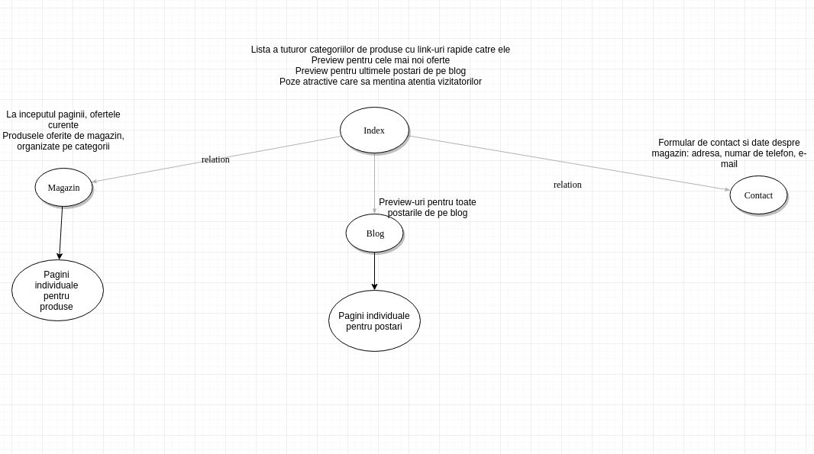

CycloClub
Documentatie
Introducere
CycloClub este catalogul unui magazin fictiv de biciclete si articole sportive dedicate ciclistilor. Aici vizitatorii pot gasi oferta magazinului, prezentata intr-un mod atractiv si usor de navigat, dar si un blog menit sa ofere informatii despre diferite produse, sfaturi mecanice si tehnice si multe alte articole pe interesul pasionatilor.
Persoanele interesate de a incepe sa practice ciclismul sunt de multe ori intimidate de cantitatea de informatie pe care o gasesc pe internet legata de acest sport si pot face alegeri gresite in materie de echipament sau, mai rau, se pot descuraja si renunta la aceasta activitate. Site-ul CycloClub isi propune sa ofere informatiile necesare incepatorilor si pachete promotionale, construite in jurul nevoilor acestora. Totodata, pe blogul magazinului, incepatorii pot citi despre experienta unor sportivi mai experimentati.
Nici pentru sportivii cu experienta in domeniu nu este mai usor sa isi organizeze activitatea. Acestia au nevoi speciale din partea unui fornizor de servicii in care isi pot pune increderea. Fie ca au nevoie de echipament special, revizii sau suplimente nutritive, CycloClub isi propune sa le fie celor mai pasionati ciclisti un partener de incredere.
Clasa de vizitatori
Publicul tinta al acestui site este compus din pasionatii de ciclism cu mai multa sau mai putina experienta. Totodata, site-ul se adreseaza si celor care sunt doar curiosi de acest sport, incercand sa ii atraga prin calitatea continutului, postari pe blog adresate lor si oferte speciale pentru primii clienti.
Graful site-ului
Continut
CycloClub este impartit in doua mari categorii: magazin si blog. Partea de magazin contine 3 subcategorii: biciclete, piese si accesorii, nutritie. Subcategoria biciclete mai poate fi impartita in biciclete de munte, biciclete de sosea, cyclocross, biciclete urbane si gravity.
Cuvinte Cheie
Pentru o mai buna indexare in motoarele de cautare si, astfel, pentru o mai buna vizibilitate a site-ului, Cycle Club foloseste o serie de cuvinte cheie usor de cautat atat de oameni, cat si de web crawlers
| Numele Paginii | URL | Cuvinte Cheie | Titlu Pagina |
|---|---|---|---|
| Index | http://www.cycleclub.ro/index.html | Ciclism, oferta, magazin, bicicleta, promotie, online | CycloClub | Biciclete si Accesorii Online |
| Magazin | http://www.cycleclub.ro/magazin.html | Ciclism, bicicleta, accesorii, magazin, mountain bike, road bike, munte, sosea, accesorii, piese, oferta, promotie | CycloClub | Oferte biciclete si accesorii |
| Blog | http://www.cycleclub.ro/blog.html | Ciclism, bicicleta, sport, nutritie, sanatate, cursa, concurs, mecanica, reparatie, pasiune | CycloClub | Blogul pasionatilor |
| Contact | http://www.cycleclub.ro/contact.html | Ciclism, bicicleta, magazin, contact, harta, email, telefon, adresa | CycloClub | Contact |
Concurenta
-
PlayBike
Puncte Tari:
- Produsele sunt viziibile de pe prima pagina. Informatiile sunt usor accesibile
- Footer-ul si meniul din dreapta contin cuvintele cheie pentru website, ceea ce face ca orice pagina sa fie usor de gasit pentru motoarele de cautare
-
Puncte Slabe:
- Design invechit, care nu este responsive. Site-ul nu este optimizat nici pentru ecranele mici, nici pentru cele de rezolutie inalta.
- Nu foloseste tag-urile semantie. Este construit, in principal, prin div-uri
- Font mic si greu de citit.
-
BikeXpert
Puncte tari:
- Informatii usor accesibile. Meniul de navigare este usor de observat si accesat.
- Imagini sugestive.
Puncte Slabe:
- Design usor invechit. Pentru versiunea desktop exita un bug, overflow-ul pe axa x nu este ascums
-
Biciclop
Puncte Tari
- Design atractiv, responsive.
- Usor de navigat. Informatiile sunt accesibile de pe prima pagna.
- Ofera informati suplimentare utilizatoriilor prin intermediul unui blog.
Puncte Slabe
- Lipsa tag-urilor semantice.
-
BikePlus
Puncte Tari:
- Accesibil si usor de navigat. Impartirea pe categorii de produse se face inca de pe prima pagina.
- Imaginile ce se deruleaza automat pot atrage atentia vizitatorului.
- Prezenta unui jurnal de activitati ce creeaza o comunitate in jurul site-ului.
Puncte Slabe:
- Designul nu este responsive.
- Lipsa tag-urilor semantice.
-
DirtBike
Puncte tari:
- Site axat pe comunitate, prezinta sectiunile de pe prima pagina: articole/stiri, oferte din bazar si noutati de pe forum de pe pagina principala.
- Design responsive.
Puncte slabe:
- Experienta de pe mobil este lasa de dorit. (Am folosit site-ul destul de des) Campurile de filtrare de produse nu sunt optimizate pentru mobil si e usor sa aplici filtrele gresite.